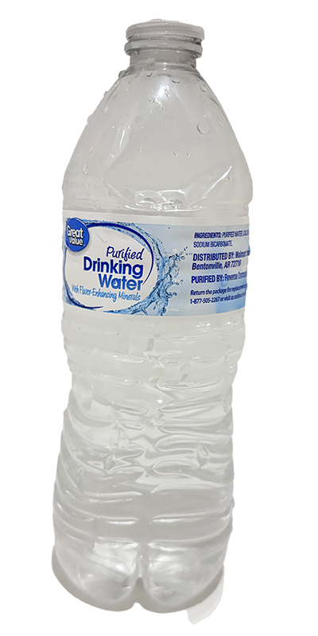
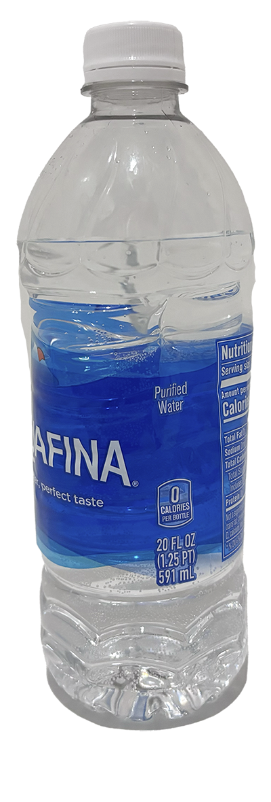
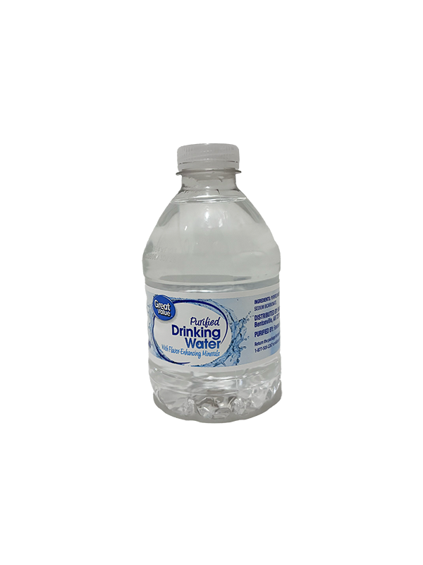
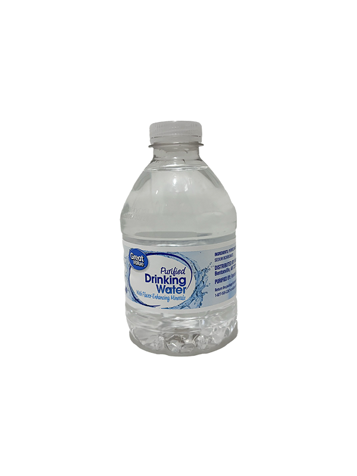

Vessels
A 40-second animated film.
Title concepts: Vessels. Spilled Love. Treat or Cheat.
Production Period: January 25 - 31, 2025
Created by: River Yu
"Please set your volume above at least 50% before playing. Note that audio begins at 18 seconds into the clip."
Characters
Meet our three main bottles, each with their own unique personality and journey.
Bottle 1 - The Protagonist
Our conflicted hero, on a quest for connection. Happily in a committed relationship with Bottle 2 and they have two adorable kids, but everything changes after one wild party night.

Bottle 2 - The Devoted Partner
Brings warmth through daily acts of love. Creator of cherished moments.

Bottle 3 - The Magnetic Soul
Electric, fascinating, a mirror to Bottle 1's deepest self. Their chance meeting sparks undeniable chemistry that challenges everything.

Okay... kids rights matter!
 

Wait... don't forget about the hand at the end and the pouring water!
(Let's be honest, our bottles get all the glamour shots while hands and water just do all the work!)
Hand: Evil right hand of Yulong Quan (director's partner, currentlyXD) - the agent of unpredictable fate.
Water: Bottle 1's emotional turbulence.
This film doesn't worth this documentation if not required,
but I am grateful for my bottles' performance
A lot can be done to make it better
but I am just too busy to polish it, SORRY
Hi I am River Yu 余洋希, your friendly neighborhood animator who somehow decided to make an emotional drama starring plastic bottles.
What I wanted to explore is the emotional weight of someone who cheats (that water turbulence scene) and the uncertainty of fate (the mysterious human hand at last), but these themes probably needed more than 40 seconds to fully unfold...
First time using Adobe Animate (aka the cooler Flash for you [and me] millennials out there), iMovie, AND Photoshop since my primary school Flash gaming days, and wow, what a journey!
Lessons learned with lack of sleep right before deadline:
;) (wanted to use text emoticons all along the film but find it quite confusing without caption (I know the biggest weakness is legibility before I submitted the assignment)...
---------------------------------------------------------
Plot vs. Duration Reality Check:
- Don't try to fit a whole relationship drama + party scene + emotional crisis + family dynamics into 30 seconds
- Those bottles needed more time to process their feelings
- Note to self: Each transition deserves at least 2-3 seconds to breathe (not 0.5 seconds of panic-induced scene changes)
---------------------------------------------------------
Technical Wisdom:
- Learn keyboard shortcuts BEFORE the final night
- Animation takes 3x longer than your optimistic 3 AM brain thinks
- Next time make the water scene a surreal dream sequence - tears become an ocean, reality dissolves, bottles float in emotional space (and it's totally not because I ran out of time to animate proper transitions)
---------------------------------------------------------
Future Me, Please Read:
- Start early to implement (Future me reading this: we both know you won't, but at least TRY?)
- Don't stay up late (Animating at 4:37 AM while experiencing exsitential crisis and watching bottles dance)
- Plan ahead > creative crisis at midnight > questioning my whole life at 3 AM > sunrise revelations
Process
Production Period: January 25 - 31, 2025
Ideation:
Started with exploring various themes of romantic love.
Alterative ideas:
1. how "romantic love is overrated"
2. documenting loving acts by focusing on partner's hand (like how he packed lunches for me and cook every single meal for us)(that's not overrated I love him),
but these felt either too off-topic or cliche.
Ultimately chose to focus on the complex emotional landscape of infidelity.
Key creative decisions:
- Used plastic bottles as gender-neutral characters
- Decided to focus on the cheater's perspective and internal struggle
- Incorporated water as a metaphor for emotional turbulence
- Added the "hand of fate" ending for determinist tension


(find how bottles undressed to make love in this first draft storyboard)
Implementation:
Wanted to implement stop motion first....
But found it too hard and troublesome, then turned to Adobe Animate
Created using three main software tools:
- Adobe Animate: Character animation and main scenes
- Photoshop: Cut out the bottles
- iMovie: Final editing and sound integration (much more friendly than PR for first time user)
Shot the water scene and hand scene,
Recorded breathe sound (buried behind water scene), step sound (didn't use)
Animating and video editing grind....
Crossed the finish line! *victory dance* 🎉